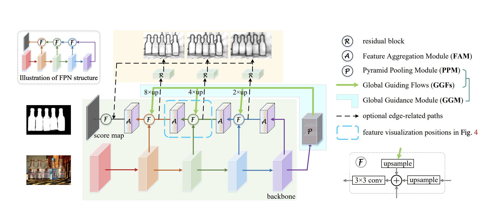

本文的核心与其名字PoolNet一样，在于改进池化操作以提高网络表现。网络主体为类似U-Net的Encoder-Decoder结构，不过有两处改进：一是在最高层特征图后添加GGM（global guidance module），二是Bottom-Up途径添加了FAM（feature aggregation module）以更好地融合Top-Down、Bottom—Up及GGM输出特征。最后，文中还提出了可通过边缘检测模块进一步提升边界分类准确率。网络结构如下图所示。

文中引入GGM是为了解决一个问题，原始的U-Net结构中，深层捕获的显著性物体的位置信息会在逐层上采样的过程中逐渐丢失，即使采用了粗糙与细致特征融合的方法也无法很好的解决这一问题；其次，全卷积网络的感受野有限，难以捕获全局信息。因此GGM对最深层特征图进行了空间金字塔池化，提取多尺度特征，并在逐层上采样后与Bottom-Up分支融合。
为了更好的融合Top-Down、Bottom-Up及GGM输出三种特征，文中提出了FAM模块，一定程度上也可以视为空间金字塔池化。三类特征中Bottom-Up及GGM经上采样，经对应元素相加后经过33卷积并输入FAM。FAM含有四个不同尺度的空间金字塔分支，对四个分支分别进行平均池化后，经33卷积上采样至同样尺寸后，将四个分支的特征图对应元素相加并用3*3卷积处理得到输出。该模块可以在一定程度上降低了重叠效应，并提高了整个网络的感受野。
为证明以上两个模块的有效性，作者均给出了详细的对比实验结果。
最后，文中还提出了可以通过与边缘检测联合训练来提高边界的分类准确率，并给出了相应的实验结果。
模型在ECSSD等6个数据集上进行了测试，300*400像素输入，在Titan Xp平台上推断速度为30fps。